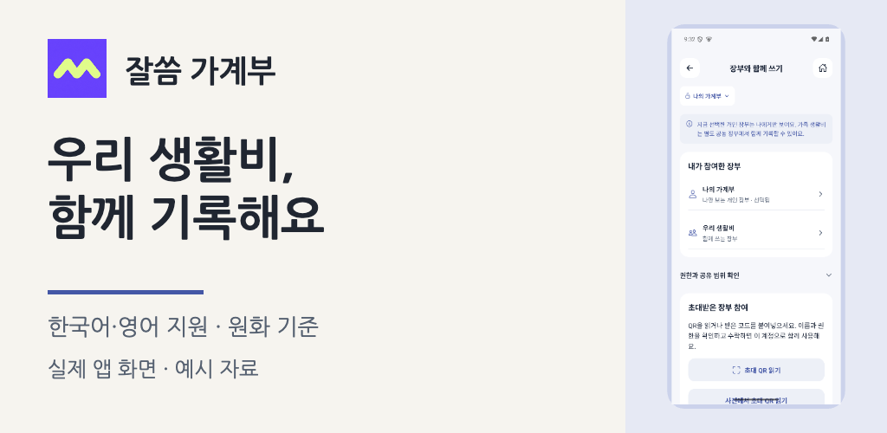

잘씀 제작 소식
가계부를 만드는 과정,
하나씩 기록해요.
업데이트 · 잘씀 제작자
· Android 정식 출시
이제 Android에서도
잘씀을 시작하세요.
잘씀 1.0.0(18)이 한국 Google Play에 공개됐어요. 한국 App Store와 Google Play에서 무료로 설치할 수 있고, 토스 앱에서도 이용할 수 있습니다.
개인 기록과 공동 생활비를 나누고, 붙여넣은 문자는 금액·날짜·사용처를 확인한 뒤 저장하세요. 화면은 한국어·영어, 예산과 통계는 원화 기준입니다. 무료 설치와 별도 이용권의 판매 조건은 구분합니다.
영상 제작기도 이어갑니다. 교정한 후속 8편은 10월 19~26일 매일 21시 한국시간에 예약을 마쳤고, 19일·20일 영상의 공개를 확인했습니다. 같은 영상은 다시 올리지 않습니다.
10월 21일 Google Play의 실제 설치 버튼과 프로덕션 18의 100% 출시를 확인했습니다. 조회수는 설치·사용 성과와 별개이며, 실제 휴대전화 첫 사용 검수는 남아 있습니다. 아래 이전 글은 각 작성일 기준 기록입니다.
· 아이폰 정식 출시
아이폰에서 잘씀을
무료로 시작하세요.
잘씀이 한국 App Store에 출시됐어요. 개인 기록과 공동 생활비를 나누고, 문자를 붙여넣어 확인한 뒤 저장하고, 월급날에 맞춰 예산을 살펴보세요.
한국 App Store에서 무료로 설치할 수 있으며 iOS 16.4 이상이 필요해요. 화면은 한국어·영어, 예산과 통계는 원화 기준입니다. 무료 설치와 별도 이용권의 판매 조건은 구분해 안내해요.
토스에서도 만날 수 있어요
토스 앱에서 ‘잘씀’을 찾아 ‘토스로 시작하기’를 눌러주세요. 10월 18일 발생한 로그인 연결 오류는 복구했고, 이후 로그인 성공을 확인했습니다. 이전 오류 화면이 남아 있으면 잘씀을 닫았다가 다시 열어주세요.
Android 앱은 심사 중이에요
Google Play의 일반 공개는 아직 완료되지 않았어요. 공개가 확인되면 공식 사이트에 설치 링크를 추가하겠습니다.
10월 20일 확인한 출시 상태입니다. 이전 글의 출시 준비·업로드 예정 안내는 각 작성일 기준 기록이에요.
이전 제작 기록 · 아래 글은 각 작성 당시의 상황입니다. 현재 이용 방법은 위 출시 안내를 확인해 주세요.
· 제작 소식 채널
잘씀을 만드는 이야기,
Instagram과 Threads에서도.
내 기록과 함께 쓰는 생활비를 어떻게 나눌지, 문자를 붙여넣은 뒤 무엇을 확인할지. 실제 앱 화면과 함께 작은 개선 과정을 더 자주 나누려고 해요.
잘씀 공식 계정은 두 곳 모두 @jalsseumapp입니다. 편한 곳에서 제작 소식을 보고, 생활비를 기록하며 불편했던 점을 들려주세요.
문자 입력을 시험하며 배운 점을 Reddit에도 공유했어요. (영어) ↗
앱은 현재 출시 심사 중이며 일반 다운로드는 아직 열리지 않았어요. 화면 속 거래는 가상 예시입니다.
새 한국어 음성으로 만든 첫 릴스 · 18초 ↗
· 첫 제작기 공개
코딩 모르는 제가 만든 가계부,
첫 이야기를 공개했어요.
내가 쓴 돈과 함께 쓴 생활비를 따로 보고 싶어서, AI와 가계부를 만들기 시작했어요. 그 출발점과 실제 앱 화면을 25초 영상에 담았습니다.
첫 제작기는 10월 16일 공개됐어요. 한국어 AI 음성과 자막으로 볼 수 있습니다. 여러분은 개인 소비와 함께 쓰는 생활비를 어떻게 나누고 계신가요? 영상 댓글로 들려주세요.
잘씀은 출시 준비 중이며, 일반 다운로드는 아직 열리지 않았어요.
· 비개발자의 제작기
시험 문자 절반을
못 읽었어요.
코딩을 모르는 제가 AI와 가계부를 만들고 있습니다. 내 돈과 함께 쓰는 생활비를 나눠 기록하는 앱, 잘씀이에요. 그런데 결제 문자를 붙여넣는 기능에서 막혔습니다.
시험용 문자 22개 중 11개가 처음에는 제대로 처리되지 않았어요. 승인 뒤에 취소가 붙거나, 날짜에 요일이 들어가거나, 여러 문자가 한꺼번에 붙어 있는 경우였습니다.
고치고, 같은 문자로 다시 확인했어요
이런 형식들을 고친 뒤 같은 시험 문자 22개를 다시 확인했고, 22개 모두 통과했습니다. 다만 만들어 둔 시험 문자에서 확인한 결과예요. 모든 카드사 문자나 실제 휴대전화에서 100% 된다는 뜻은 아닙니다.
저장 전에 확인하는 단계를 남겼어요
붙여넣은 뒤 금액·날짜·내용을 먼저 보고 저장합니다. 잘 읽지 못한 문자는 직접 입력할 수 있고, 먼저 고친 항목을 유지하면서 다음 문자를 추가할 수 있게 다듬었어요.
기능을 만드는 일과 여러 형식으로 확인하는 일은 달랐습니다. 다음에는 실제 휴대전화와 문자 앱에서 같은 흐름이 이어지는지 확인해야 합니다.
어디서 가장 번거로우셨나요?
입력하기, 분류하기, 가족과 생활비 맞추기. 가장 불편했던 한 가지를 알려주세요. 개인정보가 담긴 문자 원문 대신, 불편한 상황만 설명해 주셔도 좋습니다.
현재 iOS·Android 내부 시험 단계이며 일반 출시는 준비 중입니다. 앱 화면은 한국어·영어, 예산·통계는 원화 기준입니다. 시험 숫자는 10월 11일 합성 문자 22개를 확인한 결과입니다.
· 비개발자의 제작기
코딩 모르는데,
가계부를 만들고 있어요.
AI에게 말로 시키며 만든 가계부, 잘씀. 내 소비와 생활비를 나눈 이유부터 시험 문자에서 막혔던 일까지, 실제 화면과 함께 짧게 이야기해요.
- 10월 16일 공개 · 코딩 모르는 제가 가계부를 만들었어요 · 25초
- 음성 교정본 완성 · 시험 문자 절반을 못 읽었어요 · 새 업로드 대기
- 10월 21일 21시 공개 예정 · 가계부는 꼭 1일부터? · 교정본 16초
10월 18일 한국어 말투와 속도를 다시 다듬었습니다. 새 합성 음성과 대화체로 만든 교정본 중 6편을 10월 19일과 21~25일, 매일 밤 9시(한국시간)에 예약했어요. 나머지 2편은 업로드 대기 중입니다. 첫 제작기와 30초 소개 영상은 계속 볼 수 있어요.
출시 준비 중 · 일반 다운로드는 아직 열리지 않았어요. 문자인식 숫자는 합성 시험 표본 22개의 수정 전후 결과이며, 일반 인식률을 뜻하지 않아요.
· 새 소식
YouTube에서 잘씀을 만나보세요.
공식 채널을 열고 첫 30초 소개 영상을 공개했어요. 개인 기록과 공동 생활비, 문자 검토와 남은 예산을 실제 화면으로 보여드려요.
출시 준비 중 · 일반 다운로드는 아직 열리지 않았어요.
· 첫 소개
함께 쓴 생활비와 나 혼자 쓴 돈. 한 장부에 모아두면 편할 때도 있지만, 따로 보고 싶은 순간도 있죠. 잘씀은 그 작은 차이에서 출발했어요.

내 기록과 우리 생활비를 나눠서
개인 장부는 내 소비를 정리하는 공간으로, 공동 장부는 초대한 사람들과 생활비를 기록하는 공간으로 준비했어요. 지금 어떤 장부를 보고 있는지, 누가 편집하고 누가 볼 수 있는지도 확인할 수 있어요.
다시 입력하는 수고는 줄이고, 확인은 남기고
결제 문자를 붙여넣거나 공유하면 금액·날짜·분류를 검토할 수 있어요. 여러 내역도 확인하며 이어서 저장하도록 다듬었어요. 인식하지 못하는 형식은 직접 고칠 수 있고, 문자함 자동 수집이나 은행 자동 연결은 제공하지 않아요.
월급날을 기준으로 한 달 보기
매달 생활비를 시작하는 날짜를 정하고, 분류별로 얼마를 썼고 얼마나 남았는지 확인할 수 있어요. 현재 한국어·영어 화면과 원화 기준 예산을 지원해요.
이제 준비하는 것들
지금은 내부 시험을 진행하며 출시를 준비하는 단계예요. 일반 다운로드는 아직 열리지 않았어요. 정식 제공 전 스토어 심사와 실제 기기·구매 확인을 더 진행하고, 설치 가격과 이용권 조건을 확정해 안내할게요.
체험하고 싶다면 사용하는 기기와 생활비 관리에서 불편했던 점을 알려주세요. 현재 시험 상황에 맞춰 가능한 체험 방법을 안내해 드릴게요.

· 제작 소식 채널
잘씀을 만드는 이야기,
Instagram과 Threads에서도.
내 기록과 함께 쓰는 생활비를 어떻게 나눌지, 문자를 붙여넣은 뒤 무엇을 확인할지. 실제 앱 화면과 함께 작은 개선 과정을 더 자주 나누려고 해요.
잘씀 공식 계정은 두 곳 모두 @jalsseumapp입니다. 편한 곳에서 제작 소식을 보고, 생활비를 기록하며 불편했던 점을 들려주세요.
문자 입력을 시험하며 배운 점을 Reddit에도 공유했어요. (영어) ↗
앱은 현재 출시 심사 중이며 일반 다운로드는 아직 열리지 않았어요. 화면 속 거래는 가상 예시입니다.
새 한국어 음성으로 만든 첫 릴스 · 18초 ↗